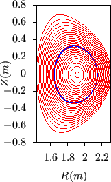
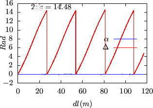

Next: Expression of metric elements Up: Field-line-following coordinates Previous: Some discussions
The generalized toroidal angle  is numerically calculated in my code.
To verify
along a magnetic field-line,
figure 26 plots the values of
is numerically calculated in my code.
To verify
along a magnetic field-line,
figure 26 plots the values of  along a magnetic field
line, which indicates that
along a magnetic field
line, which indicates that  is constant. This indicates the numerical
implementation of the field-aligned coordinates is correct.
is constant. This indicates the numerical
implementation of the field-aligned coordinates is correct.
|  |